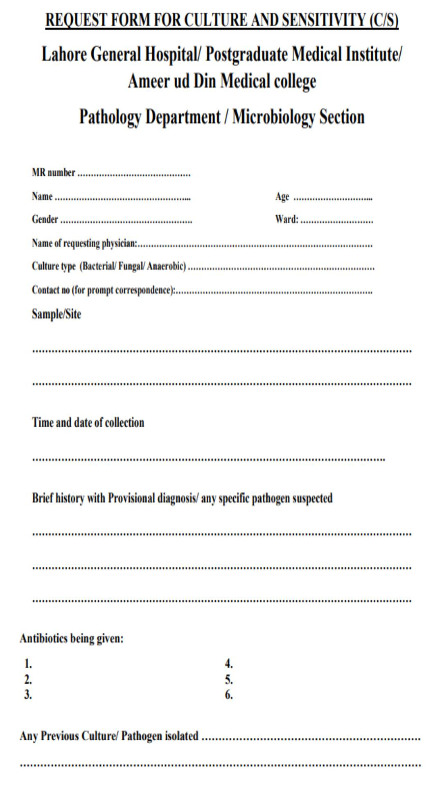
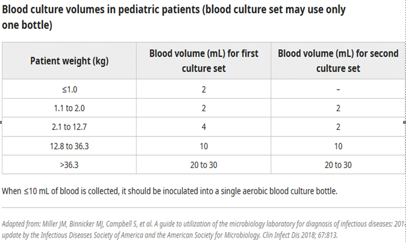
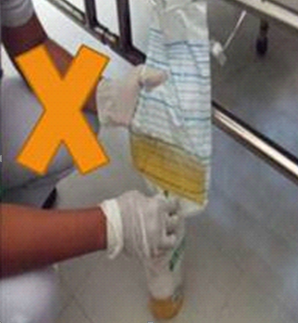
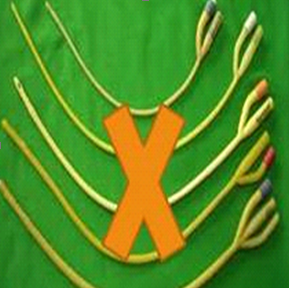

INFECTION PREVENTION & CONTROL GUIDELINES guidelines

About
Us
Contact Us
Introduction
Message by
the Principal
Message by
the Medical Superintendent
Message by
the Dr.Nizam Damani
Contributions
Disclaimer
the Principal
×

Professor Dr. Sardar Muhammad Al Fareed
Zafar
Message by the
Principal
Post Graduate Medical Institute / Lahore General Hospital / Ameer-ud-Din Medical College, Lahore, Pakistan
The healthcare facilities, especially the public sector hospitals, in underdeveloped nations
are inadequately equipped, and the burden of healthcare-associated infections (HCAIs) makes
matters worse. The importance of infection prevention and control (IPC) practices cannot be
denied to lessen the burden of HCAIs.
Now when the world has been facing the worst pandemic of COVID-19, and other infectious
diseases one after the other, the knowledge and comprehension of the core IPC practices are
the ultimate need of the hour. The subject is very broad, making it challenging to fully
understand. Therefore, it is imperative to present certain key ideas in a way that is simple
to access and comprehend.
I commend the Lahore General Hospital team for coming up with the concept for this infection
prevention and control mobile application in the hopes that it will be a helpful resource
for
medical professionals, nurses, paramedics, housekeeping staff, and anyone else who is eager
to
learn and understand the fundamentals of IPC practices.
Professor Dr. Sardar Muhammad Al Fareed
Zafar
MBBS, FSPS, FRCOG (UK), MCE (Monash University Australia)
Fellow in Reproductive Endocrinology (NUS Singapore)
Professor & Head Department of Obstetrics and Gynecology
the Medical Superintendent
×

Dr. Khalid bin Aslam
Message by the Medical Superintendent
Lahore General Hospital, Lahore, Pakistan.
It gives me great pleasure to write this message on the occasion of the launch of a mobile
application for infection prevention and control guidelines. This is a commendable
initiative
by the MSDS and infection control department of Lahore General Hospital, as it will benefit
not only health care personnel but the general population as well. All crucial components,
such as hand hygiene and personal protective measures, have been addressed clearly and
succinctly. Furthermore, the use of illustrations to express all crucial and necessary
information adds clarity to the material.
Dr. Khalid bin Aslam
MBBS, MPH, MHM
the Dr.Nizam Damani
×

Prof. Nizam Damani
Message by the Dr.Nizam Damani
IPC Expert, Senior Consultant WHO
According to the recent World Health Organisation report, it has been estimated that out of
100 patients hospitalized, seven will be infected with healthcare-associated infections
(HAIs) and the risk of acquiring HAI is up to 20 times higher in low- and middle-income
countries. In addition, deaths are increased two to threefold when infections are resistant
to antimicrobials. This is an underestimate due to the lack of surveillance in most
healthcare facilities. HAls not only drain valuable health service resources in terms of
additional costs but also have an impact on the length of stay in the hospital as well as
additional nursing and medical time. In addition, especially in low- and middle-income
countries, the cost and impact of Hals to individuals and their families can be devastating
due to loss of income, indirect cost, and burden to family members in terms of time lost
from work in caring for the affected individual. The Covid -19 pandemic shows that both
patients and health workers can be at high risk of being infected with SARS-CoV-2 during
health care delivery and need to be protected. Therefore, the implementation of effective
Infection Prevention and Control (IPC) is now a major priority on a global basis.
Unfortunately, due to various reasons, implementation of even basic IPC practices can be
challenging, especially in low- and middle-income countries. I am delighted that Dr. Amina
Asif and the MSDS department have developed the IPC App for Lahore General Hospital,
Pakistan. This is a major achievement because the App is simple to use and is also available
in Urdu. It is available on mobile devices which allows not only easy accessibility to
implement good IPC practice at the point of care by health workers but also helps update IPC
guidelines and procedures regularly. To ease implementation, IPC procedures are illustrated
using images based on local guidelines. I am confident that the availability of the IPC App
supplemented by teaching and practical training in IPC will help the hospital to implement
good IPC practices at the point of care and will not only reduce HAIs but also help protect
health workers and visitors from other infections.
Prof. Nizam Damani
MBBS, MSc, FRCPath., FRCPI, CIC, DipHIC
×

Maximum care must be taken to collect only those specimens that may yield pathogens,
rather than colonizing flora or contaminants. Specific rules for the collection
of
material
vary, depending upon the source of the specimen, but several general principles
apply.
• Make every effort to obtain specimens prior to the initiation of antimicrobial
therapy.
• Collect the specimen at optimal times (for example, early morning sputum for AFB
culture).
• Wear gloves, gowns, masks, and/or goggles, when appropriate, when collecting specimens from
sterile
sites. Use strict aseptic technique.
• When obtaining specimens from normally sterile sites such as pleural or joint spaces,
cerebrospinal fluid, or the peritoneum, take care to minimize contamination by
the
normal
colonizing flora of the skin or mucous membranes.
• Collect an adequate volume of specimen; send tissue or fluid whenever possible rather
than submitting a specimen collected on a swab.
• Swabs are not optimal for fungal culture, anaerobe cultures, decubitus ulcers, mycobacterial
cultures MTB/ RIF assay (gene Xpert), perirectal abscesses, and oral
abscesses.
• Label all specimen containers with identifying information about the patient
(name and hospital MR number ) *and the specimen source, date, time of collection
and
other required
information should be clearly filled/mentioned on".
Accompanying Requisition Form 

• Notify the laboratory in advance if special tests are requested or if unusual pathogens,
including potential agents of bioterrorism, are suspected.
• Place warning labels on specimens from patients suspected of having highly contagious
diseases
and notify the laboratory supervisor.
• If there is any question about the optimal sample to collect, contact the microbiology
laboratory
before obtaining specimens.
Specimen Transport
• Specimens should be sent to microbiology in sterile, leak-proof containers.
• Fluids obtained in syringes (eg, paracentesis, joint aspirate, needle drainage of abscess),
specimen can be sent in the original syringe with needle removed and
replaced with a
cap.
• Send the specimen to the laboratory as soon as possible after collection.
• If a delay is unavoidable, most specimens (with the exception of blood, cerebrospinal fluid,
joint fluid, Respiratory tract specimens, tissue, abscess fluid, and cultures
for
Neisseria
gonorrhoeae)
should be refrigerated until transported.
• Desiccation of the sample must be avoided.
Collect purulent material aseptically:
• From an undrained abscess: use a sterile needle and syringe after appropriate surface
decontamination.
• For large abscesses: open with a sterile scalpel and collect the expressed material with a
sterile syringe.
• Transport 5 to 10 ml of aspirated material in sterile container. (Pus obtained from the
abscess in syringe can be sent in the original syringe with needle removed and
replaced with a
cap).
• Determine the type of culture bottles to utilize, as indicated per physician's order(aerobic
/ anaerobic).
• Make every effort to send blood culture before starting antibiotics.
• Prepare the skin and draw blood aseptically
• Do not Refrigerate the Blood Culture.
Volume of Blood
Adults:
• Atleast 20 mL should be collected, with inoculation of 10 mL into an aerobic bottle and 10 mL into an anaerobic bottle. If ≤10 mL of blood is obtained, all of the specimen should be inoculated into the aerobic culture bottle.
Children:

Number of blood culture sets:
• A blood culture set usually consists of one aerobic bottle and one anaerobic bottle.
At least two, preferably three, blood culture sets should be obtained. Single blood
culture should be avoided.
• A total of two blood culture sets is usually adequate when continuous bacteremia is
suspected
and the pretest probability of bacteremia is high (as in patients with suspected IE who have
not
received prior antimicrobial therapy).
• A total of three blood culture sets is appropriate for circumstances in which bacteremia due
to a pathogen not likely to be a contaminant is anticipated (as in intra-
abdominal
sepsis or
pneumonia)
and when the pretest probability of bacteremia is low to moderate. The first two blood
cultures, obtained
with separate
venipunctures, may be obtained in sequence, with collection of the third
blood
culture four
to six hours later.
• A total of four blood culture sets are rarely needed; collection may be considered when the
pretest probability of bacteremia is high and the anticipated pathogen is
likely to be
a
common
contaminant, such coagulase-negative Staphylococci. Clinical examples include prosthetic valve
endocarditis or endovascular infections due
to infected devices, such as pacemakers or
grafts.
As many as four blood culture sets may also be necessary to diagnose endocarditis in patients
who have received
antimicrobial therapy in the preceding two weeks.
• In children, it may not be possible to obtain sufficient blood to inoculate more than a
single blood culture bottle; in such cases, all of the blood should be inoculated
into
an
aerobic bottle.
• Collect the fluid strictly using aseptic technique with a sterile needle and
syringe and place in sterile container or direct inoculation to blood culture vials.
• Volume of fluid should be at least 1 to 10 mL, but send as much fluid as possible.
• Do not send Sterile Body Fluids on swabs.
Only for diagnosis and management of central venous catheter-related bloodstream
infections.
• Cleanse skin around insertion site with alcohol.
• Send catheter tip (5 cm) in sterile container.
• Catheter tip must be accompanied with 2 peripheral blood cultures.
• Swabs and leading-edge aspirates with or without injection of saline fail
to yield etiologic agents in the majority of cases.
• If an unusual organism is suspected, a leading-edge (advancing margin) punch biopsy is
recommended.
• Place the biopsy in a sterile container with a small volume of non-bacteriostatic saline and
transport to the lab as soon as possible.
• Aseptic technique should be strictly followed — The overlying skin should be cleaned with
alcohol and a disinfectant such as povidone-iodine or chlorhexidine (0.5
percent in
alcohol 70
percent); the antiseptic should be allowed to dry before the procedure is begun.
• After the skin is cleaned and allowed to dry, a sterile drape with an opening over
the lumbar spine should be placed on the patient.
• PPE should be donned.Face masks should be used by individuals who place a catheter
or inject material into the spinal canal (CDC).
• Insert the needle.. Collect 10 to 15ml volume of CSF. (more volume has to be drawn
if additional tests like mycobacterial or fungal culture are required).
• Collect the fluid into three sterile leak-proof tubes. The tubes are to be
numbered sequentially in the order in which they are collected.(
tube 1 for chemical
studies, tube 2 for culture, tube 3 for cell counts).
• Cap the tubes tightly.
• Transport immediately to lab at ambient temperature.
• DO NOT refrigerate CSF.
• External ear cultures are processed as superficial wounds.
• Middle ear fluid will be processed as a sterile body fluid. If the diagnosis is otitis
media, the
specimen of choice is middle ear fluid collected by tympanocentesis. Use
swab to
collect
material from
ruptured ear drum.
• Please indicate specific ear source.
• Grasp the swab cap with fingers.
• Be careful to avoid contacting the swab or stick with your fingers.
• Insert premoistened swab into nares. Sweep around the interior surface of the
anterior nares.
• Perform on both nares with one swab.
• Place into transport media. Transport at ambient temperature.
• Nares swabs are only acceptable for MSSA/MRSA surveillance, not routine culture.
Note: This is an inappropriate specimen for anything other than the assessment of
Staphylococcal colonization.
Expectorated
• Assure patient cooperation to get an adequate specimen.
• Instruct the patient as follows:
a. Rinse mouth with tap water to remove food particles and debris.
b. Have patient breathe deeply and cough several times to achieve a deep specimen.
c. Patient should expectorate into dry, sterile container.
d. Patients suspected of having tuberculosis should expectorate sputum in the early morning,
into a sterile container with lid sealed tightly. Leaking specimens may
be
cancelled.
e. Transport immediately at ambient temperature.
f. Expectorated sputum is acceptable for bacterial, and fungal cultures and AFB testing
(GeneXpert).
g. Microbiologist will determine the number of squamous epithelial cells present for specimen
adequacy and reject samples for bacterial culture that are not
indicative of deeply
expectorated specimens.
h. In patients with clinical and chest x-ray findings compatible with tuberculosis, collect 3
first morning sputum specimens (on 3 separate days) for AFB testing.
For routine culture:
• Send 2-5 gms approx. in sterile wide-mouth container or enteric transport medium
(Cary-Blair) if transport will exceed 1 hour.
• Do not send specimens for routine culture on patients who develop diarrhea after three days
of hospitalization and whose admitting diagnosis was not diarrhea.
For ova and parasite examination:
• Send sample in sterile wide-mouth container.
• Fresh specimens should be examined immediately; do not send specimens on inpatients who
develop diarrhea after three days of hospitalization.
• Tissue collection is an invasive procedure and requires surgery by a trained physician.
• Collect tissue aseptically. Include material from both the center and the edge of the
lesion.
• Transport in sterile container. Keep moist; add sterile (non-bacteriostatic saline) if
necessary.
• Do not submit tissue in formalin
Give the patient a sterile, dry, wide-necked, leak proof container and request a 10–20 ml
specimen of mid stream, clean catch urine specimen as follows:
Female patients
Wash the hands. Cleanse the area around the urethral opening with clean water, dry the area
with a sterile gauze pad, and collect the urine with the labia held apart.
Male patients
Wash the hands before collecting a specimen.Cleanse the area . Rim of container should not be
touched.
Indwelling catheter urine
• The catheter tubing should be clamped off above the port to allow the collection of freshly
voided urine. The catheter port or wall of the tubing should then be
cleaned
vigorously with
70% ethanol, and urine aspirated via a needle and syringe; the integrity of the closed system
must be maintained.
• Transfer the urine to a sterile specimen container.
• Do not collect urine from the drainage bag.
• Urine catheter tip cultures are not acceptable.
Female patients
Male patients
Indwelling catheter urine

